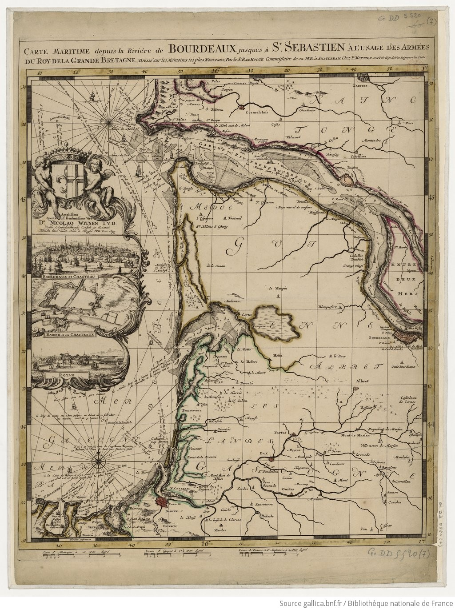

Les cartes représentant les lacs du pays de Born
Le pays de Born désigne la région des Landes qui comprend les lacs. Depuis le Moyen-Age, les lacs apparaissent (ou non d'ailleurs) sur les cartes. Ici, nous allons nous intéresser à ces représentations plus ou moins précises et leur évolution à travers l'histoire.

Les cartes les plus anciennes nous montrent, même si elles manques de précision, l'évolution des lacs, qui étaient au Moyen-Age encore reliés entre eux et rattachés à l'océan au sud .
Une carte du XVIIIe siècle montre un village engloutti dans le lac de Sanguinet-Cazaux !